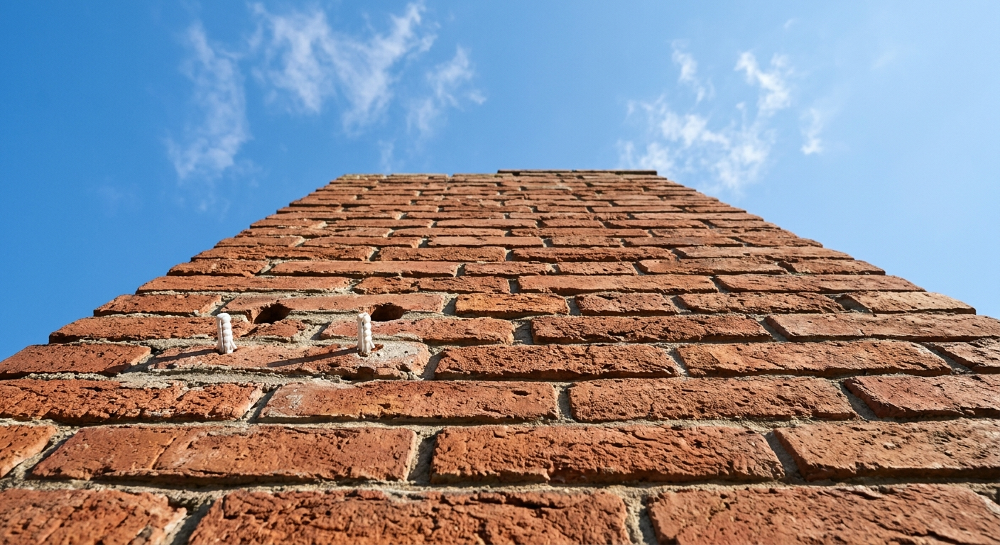
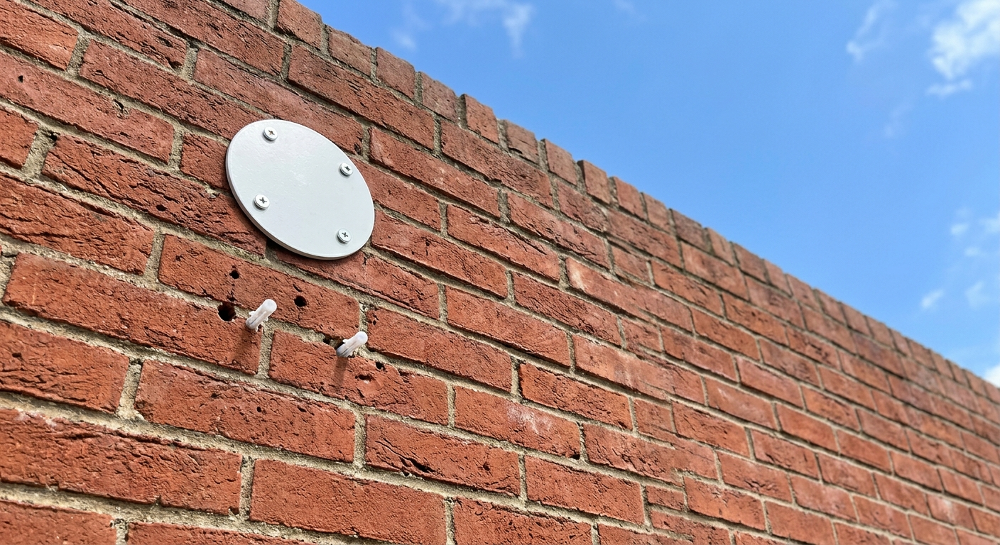

Meteo2 • Sequenza 5 Immagini allo Scroll
Scorri per vedere l’installazione completa
 [cite: 1]
[cite: 1]

[cite: 3]
[cite: 4].jpeg) [cite: 5]
[cite: 5]
 [cite: 2]
[cite: 2]
1/5 • Parete iniziale
0%
01 • Sopralluogo
Parete prima dell’installazione
Analisi del punto di posa, inquadratura e copertura di rete.
02 • Predisposizione
Fori e tasselli a muro
Ancoraggio predisposto sulla muratura per una tenuta sicura.
03 • Base
Piastra fissata a muro
Piastra di supporto solida ancorata alla parete.
04 • Struttura
Braccio forte fissa a muro
Braccio resistente con passaggio cavo protetto e fissato.
05 • Live & Meteo 2
Telecamera 4K installata
Pronta per flusso live, dati meteo, timelapse e App Meteo 2.